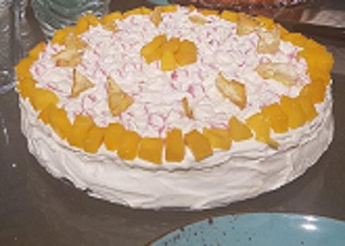
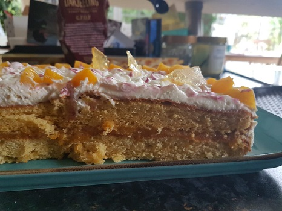

zurück
Karamel-Mangokuchen
Zubereitungszeit: 60 min

- Salted Caramel herstellen, auskühlen lassen
- 2 Kuchenböden backen
- Währenddessen das Mangokompott zubereiten und kaltstellen
- Die Quarkcreme zubereiten und in einen Spritzbeutel geben
- Einen Boden mit Mangokompott bestreichen, kleine Karamelsplitter darauf verteilen
- Den Zeiten Boden auflegen und mit salted Caramel bestreichen
- Kuchenrand mit Quarkcreme einstreichen, mit Spritztülle Blumen spritzen
- Restliche Creme leicht einfärben (mit Zahnstocher etwas farbe hinenpicken) und weiter Blumen spritzen
- Kuchen mit Mango- und Karamelstücken dekorieren
